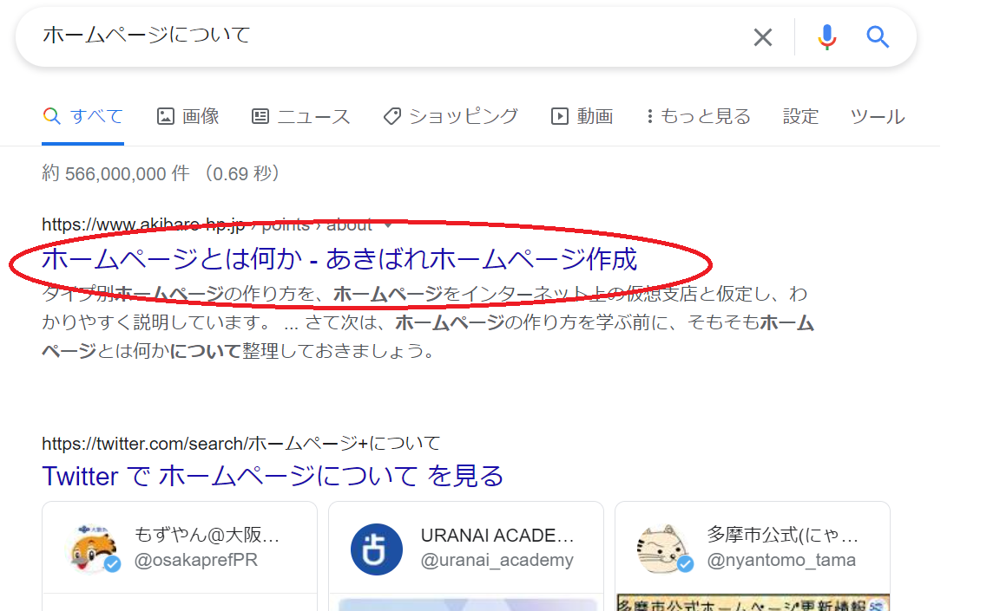
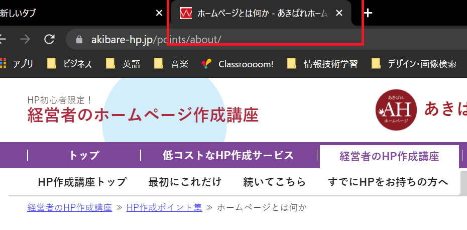

Headタグを理解しよう
ここでは基本的な以下のタグを詳しく解説していきます。
- metaタグ
- titleタグ
- linkタグ
metaタグについて
文書のメタ情報（文書の説明や文字エンコーディングなど）を記述するものでhead要素だけで使用されます。
<meta charset=”UTF-8″>
上記は、UTF-8の文字種類でHTML文書を書きますという宣言です。 これを書いてないと「文字化け」などの原因となることがあります。 決まり文句として内の最初に書いておくとよいです。
<meta name=”description” content=“…”>
サイトの概要を説明するもので、検索結果の画面に表示される部分です。 ここに入力した内容が、GoogleやYahooといった検索エンジンが認識・識別し、 どのページがユーザーに とって必要なのか判断します。 つまり、SEO（検索ヒットするかどうか）上、大変重要な役割です。

titleタグについて
Webページのタイトルを記述する、SEO上も重要な要素で検索エンジンの結果にも一覧表示されます。 タイトルを付ける際は、Webページの内容に合ったものにするとよいです。
linkタグについて
スタイルシートなどの外部ファイルを参照する際に使用する ・rel属性：外部ファイルのタイプを指定する ・href属性：外部ファイルの場所を指定する